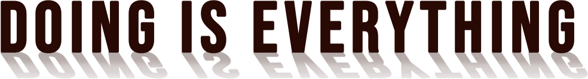

네스프레소는 행동이 중요하다고 믿습니다

우리는 긍정적인 변화를 만들기 위해
끊임없이 노력하고 있습니다
SCROLL
우리는 긍정적인 변화를 만들기 위해
끊임없이 노력하고 있습니다
최상의 커피 경험을 전하는 네스프레소
한 잔의 커피는 사회와 환경에 더 많은 가치를 더합니다
한 잔의 네스프레소 커피가 선사하는 긍정적인 영향
네스프레소 Positive Cup의 최종 비전은
세상에 긍정적 영향을 미치는 커피를 만드는 것입니다.
하나의 기업으로서, 지속가능성은 우리 사업의 한 방식이기도 하지만,
우리가 하는 모든 일의 가장 핵심이기도 합니다.
우리는 네스프레소가 지속가능한 커피 경제를 만듦으로써 보여준
책임의식을 이해하고 존중하며, 커피 열매가 한 잔의 컵에 담기기까지
우리가 가진 최적의 지속가능 실천 원칙을 함께합니다.
우리의 목표는 농부들과 사업 파트너, 고객에게 환경을 보호함과 동시에 더
많은 가치를 안겨드리는 것입니다.
지속가능한 품질의 커피의 확보
네스프레소는 향후 100% “네스프레소 AAA 지속가능한
품질 프로그램 (Nespresso AAA Sustainable Quality)”을 통해
커피를 지속 가능한 방식으로 공급할 것입니다.
우리는 “네스프레소 AAA 지속가능한 품질 프로그램”을 에티오피아,
대대적으로 확장하고, 향후 6년간 위 나라에
1500만 CHF를 투자함으로써 이 효과를 실감할 것입니다
또한, 우리는 우리의 오랜 파트너인 열대우림동맹(2003년부터) 및
국제공정무역기구와의 협업을 통해 농부들이 물 관리, 생물 다양성,
공정한 근로 환경 등의 영역에서 높은 수준의 기준에 도달할 수 있도록 지원할 것입니다.
100% 지속가능한 방식으로 관리되는 알루미늄
네스프레소는 사용된 알루미늄 캡슐을 수거할 수 있는 역량을 증대시켜 네스프레소가 운영되는 곳이라면 어디든지 100% 재활용이 가능하도록 역량을 키워나가고 있습니다.
한 발 더 나아가 사용된 캡슐을 기업 차원에서 수거한 후 재활용하여, 환경적 측면에서 합리적인 경우라면 언제나 새로운 캡슐로도 재사용하고 있습니다.
네스프레소의 이러한 알루미늄 관리 비전의 또 다른 핵심 측면은, 현재 세계자연보전연맹(IUCN)이 이끄는 다자간 이해당사자 프로그램 내에서 개발되고 있는 새로운 알루미늄 관리 구상안(ASI: Aluminum Stewardship Initiative) 표준을 준수하는 100%의 버진 알루미늄(Virgin Aluminum)으로만 캡슐을 생산하게 된다는 점입니다.
탄소 중립화를 통한 기후변화 기여
네스프레소가 커피 농부들을 대상으로 기술을 전수하고 있는 혼농임업은
농사와 임업이 결합된 형태의 농사로 기후 변화에 대한 유연성을 높여
보다 장기적으로 최상의 품질의 커피를 재배할 수 있도록 돕습니다.
이 농업 방법을 통해 네스프레소는 탄소 중립화에 기여하고 있습니다.
기후 변화와 관련해 네스프레소는 2020년까지 2009년 대비 네스프레소
한 컵의 탄소 발자국을 28% 저감한다는 계획입니다.
또한 회사 운영으로 인한 탄소 발자국을 100% 상쇄하고 5백만 그루의 나무
심기를 통해 커피 농업의 기후 변화 유동성을 높이겠다고 발표한 바 있습니다.